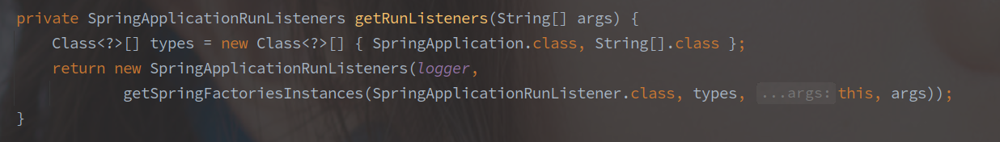
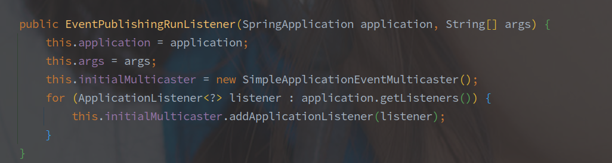
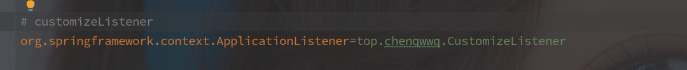
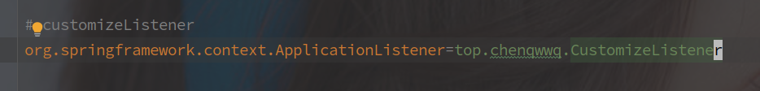

SpringBoot的事件模型
首先明确，Spring 中的事件模型是基于观察者模式设计的，观察者模式的重点在于由被观察者持有观察者的引用。
[TOC]
基类接口/抽象类
ApplicationListener - 监听者
Spring 中所有监听器的顶级接口，所有子类对象必须在 onApplicationEvent() 方法中实现对事件的处理。
@FunctionalInterface
public interface ApplicationListener<E extends ApplicationEvent> extends EventListener {
/**
* Handle an application event.
* @param event the event to respond to
*/
void onApplicationEvent(E event);
}
接口中也限制了监听的事件对象，必须是 ApplicationEvent 的子类。
ApplicationEventMulticaster - 事件广播器
public interface ApplicationEventMulticaster {
// 对监听者的增删操作
// Bean是原来就在IOC容器中的
void addApplicationListener(ApplicationListener<?> listener);
void addApplicationListenerBean(String listenerBeanName);
void removeApplicationListener(ApplicationListener<?> listener);
void removeApplicationListenerBean(String listenerBeanName);
void removeAllListeners();
// 事件发布的两个重载方法,ResolvableType表示的是事件的类型
void multicastEvent(ApplicationEvent event);
void multicastEvent(ApplicationEvent event, @Nullable ResolvableType eventType);
}
以上是事件广播器的方法列表。
事件广播器就是 ApplicationListener 的持有者，负责维护坚挺着列表，并广播对应的事件。
ApplicationContext 以及应用启动初期的 EventPublishingRunListener 都是通过 ApplicationEventMulticaster 实现的事件广播功能。
ApplicationEvent - 监听事件
ApplicationEvent 是 Spring 中所有事件的基类，继承自 JDK 中的 EventObject。
在 EventObject 中事件源的基础上又封装了一个 timestamp 的属性。
// EventObject 是 JDK 中对观察者模式的原生实现
public abstract class ApplicationEvent extends EventObject {
private static final long serialVersionUID = 7099057708183571937L;
// 增加了一个时间戳字段。
private final long timestamp;
public ApplicationEvent(Object source) {
super(source);
this.timestamp = System.currentTimeMillis();
}
public final long getTimestamp() {
return this.timestamp;
}
}
Spring 中有两个直接继承 ApplicationEvent 的子类：
SpringApplicationEvent - 在应用启动时触发的相关事件，在 SpringApplication 中触发，以 SpringApplication 作为事件源。
ApplicationContextEvent - 表示从 ApplicationContext 中广播的事件，以 ApplicationContext 为事件源头。
// ApplicationContextEvent
public ApplicationContextEvent(ApplicationContext source) {
super(source);
}
// SpringApplication
public SpringApplicationEvent(SpringApplication application, String[] args) {
super(application);
this.args = args;
}
从构造函数中也可以看出，SpringApplicationEvent 的事件源必须是 SpringApplication，而 ApplicationContextEvent 的事件源必须是 ApplicationContext。
ApplicationEventPublisher - 事件发布器
事件发布动作的顶级接口
@FunctionalInterface
public interface ApplicationEventPublisher {
// 接口中就定义了两个方法，像List那种顶级接口一样的方法规范接口
default void publishEvent(ApplicationEvent event) {
publishEvent((Object) event);
}
void publishEvent(Object event);
}
ApplicationContext 接口继承了该接口，具体的实现在 AbstractApplicationContext，其中也会调用广播器 ApplicationEventMulicaster 作为工具类进行广播。
SpringBoot 启动过程中的事件
SpringBoot 的启动过程中发布的主要事件就是 SpringApplicationEvent。
首先在初始化 SpringApplication 时就会通过工厂加载机制获取并保存所有的 ApplicationListener 实现。
但是在容器启动早期，连 ApplicationContext 都还没创建，所有的事件其实是通过 SpringApplicationRunListener 发布的。

同样是通过工厂加载模式获取的 SpringApplicationRunListener 实现，并且默认的只有 EventPublishingRunListener。
EventPublishingRunListener 在初始化的时候会从 SpringApplication 中抽取所有的 ApplicationListener 。
而且其内部的广播还是依靠的 SimpleApplicationEventMulticaster，

在 SpringBoot 启动初期当然是 Bean 对象都未加载，所以自定义监听器仅仅是声明为 Bean 肯定是无法接收到早期的事件的。
需要借助工厂加载模式，在 spring.factories 中声明监听器，使其在第一时间被加载。

ApplicationContext 的事件发布流程
Spring 中事务的发布流程的核心方法其实实现在 AbstractApplicationContext 中。
AbstractApplicationContext 继承自 ConfigurableApplicationContext 接口，间接继承了 ApplicationEventPublisher 接口，所以 AbstractApplicationContext也实现了publishEvent 的方法。
对应的发布流程很简单：
- 获取匹配的监听者
- 调用监听者的触发方法
- 在父容器继续发布事件
！！事件的发布是会从子容器传递到父容器的，但不会从父容器到子容器。
以下为事件发布的流程代码：
// AbstractApplicationContext#publishEvent
protected void publishEvent(Object event, @Nullable ResolvableType eventType) {
Assert.notNull(event, "Event must not be null");
// 转化事件源类型方便解析和使用 object -> other
ApplicationEvent applicationEvent;
if (event instanceof ApplicationEvent) {
applicationEvent = (ApplicationEvent) event;
}else {
// 包装为负载的应用事件
applicationEvent = new PayloadApplicationEvent<>(this, event);
// 获取事件类型
if (eventType == null) {
eventType = ((PayloadApplicationEvent<?>) applicationEvent).getResolvableType();
}
}
// earlyApplicationEvent 是否为空表示是否需要收集事件，
// 等事件广播器初始化完成之后统一下发
if (this.earlyApplicationEvents != null) {
this.earlyApplicationEvents.add(applicationEvent);
}else {
// 事件发布的主要流程
getApplicationEventMulticaster().multicastEvent(applicationEvent, eventType);
}
// 同样在父容器中发布该事件
if (this.parent != null) {
if (this.parent instanceof AbstractApplicationContext) {
((AbstractApplicationContext) this.parent).publishEvent(event, eventType);
}else {
this.parent.publishEvent(event);
}
}
}
方法实现中有一个 earlyApplicationEvents 用于记录早期的事件。
在 ApplicationContext 未初始化完毕的时候，如果发布某事件没有 ApplicationEventMulticaster 来发布，则会将事件保存在该集合中。
如果没有指定，ApplicationContext 中使用的也是 SimpleApplicationEventMulticaster 来发布对应的事件。
自定义监听器的方式：
实现自定义的事件监听有以下三种方式:
- @EventListener 注解
@Component
public class TestApplicationListener{
// 方法上标注EventListener就可以监听方法入参类型的事件
@EventListener
public void onApplicationEvent(ApplicationEvent event) {
...
}
}
该注解需要标注的类是一个 Bean 对象，并且参数就是关注的事件类型。
该参数的解析由 EventListenerMethodProcessor 完成，并通过 EventListenerFactory 创建对应的监听者对象，默认使用 ApplicationListenerMethodAdapter 类。
- 继承 ApplicationListener 或其子类
只要继承了 ApplicationListener，就是一个标准的监听器，但是使监听器生效还需要声明为 Bean 或者使用工厂加载模式。
// 实现ApplicationListener接口
// 接口中的泛型类型就是想要监听的事件类型
@Component
public class TestApplicationListener implements ApplicationListener<ContextRefreshedEvent>{
@Override
public void onApplicationEvent(ContextRefreshedEvent event) {
...
}
}

工厂加载模式下，CustomizeListener 也必须要实现 ApplicationListener 接口。
相对来说，工厂加载模式生效的事件更早，也早于 @EventListener，因为在 SpringApplication 的构造函数中就已经加载了。
总结
SpringBoot 的事件模式总体还是依托于观察者模式，关键就在于 被观察者持有观察者的引用。
个人感觉最主要的还是事件发布的时候还会扩散到父类容器。